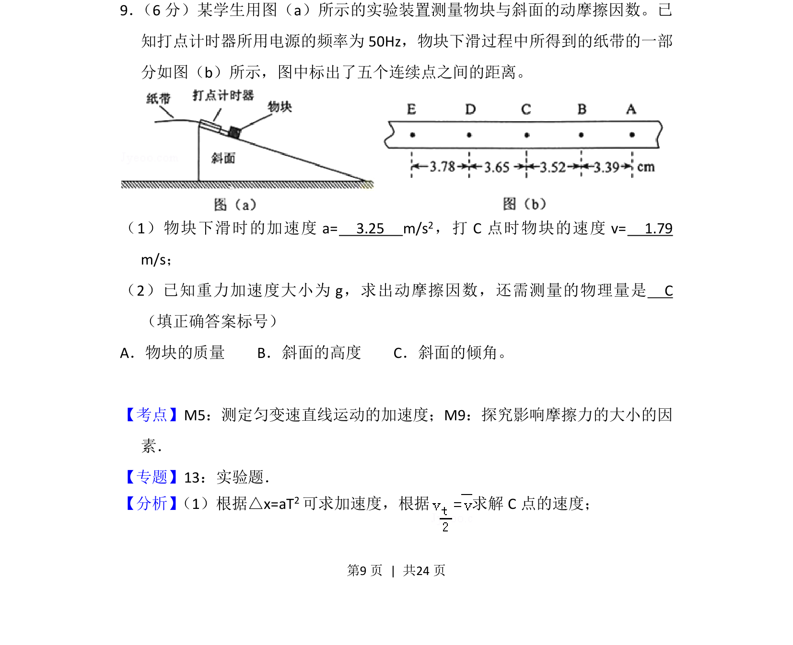
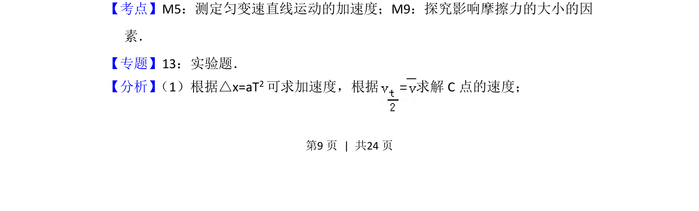
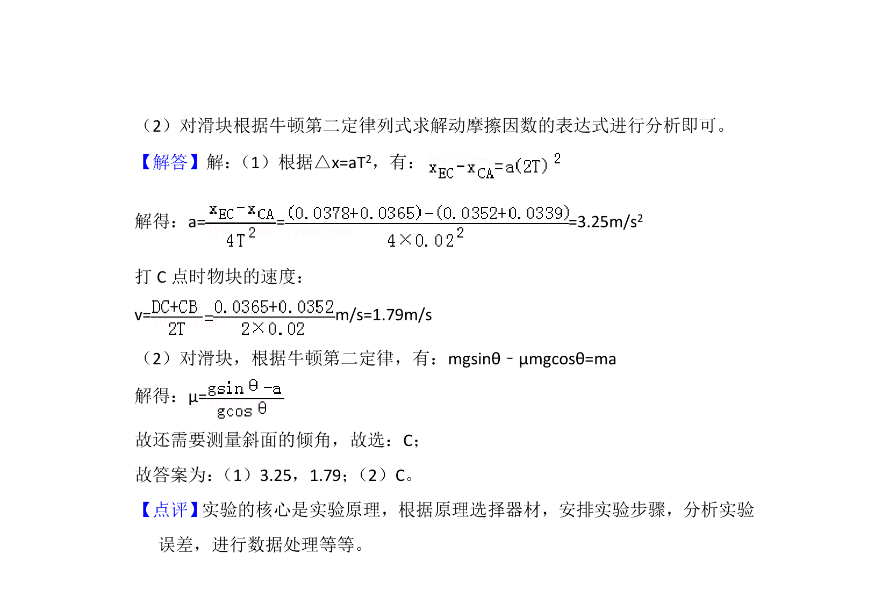

考点：测定匀变速直线运动的加速度 探究影响摩擦力的大小的因素

考查匀变速直线运动实验数据处理及测量动摩擦因数方法


📄 原 PDF 第 9 页：
素材/真题/吉林/2008-2024·（吉林）物理高考真题/2015年高考物理试卷（新课标Ⅱ）（解析卷）.pdf
9． （6分）某学生用图（a）所示的实验装置测量物块与斜面的动摩擦因数。已 知打点计时器所用电源的频率为50Hz，物块下滑过程中所得到的纸带的一部 分如图（b）所示，图中标出了五个连续点之间的距离。 （1）物块下滑时的加速度a= 3.25 m/s 2，打C点时物块的速度v= 1.79 m/s； （2）已知重力加速度大小为g，求出动摩擦因数，还需测量的物理量是 C （填正确答案标号） A．物块的质量 B．斜面的高度 C．斜面的倾角。
【考点】M5：测定匀变速直线运动的加速度；M9：探究影响摩擦力的大小的因 素．菁优网版权所有 【专题】13：实验题． 【分析】 （1）根据△x=aT2可求加速度，根据 求解C点的速度；